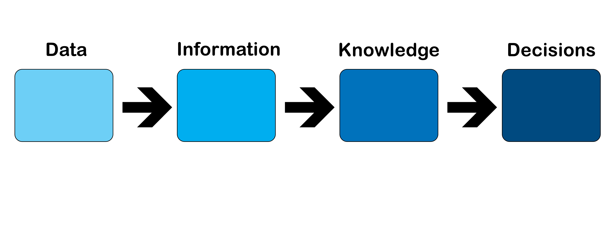

1 What is Data?
Data, Information, Knowledge, Decisions
Data are the bits and pieces of information, like numbers and characters but without context or relevance. We may have data, but without context, it is meaningless to us. We can see, however, the type of data (or datatype) it might be, like numbers or characters.
Data is a latin word and does not follow the normal English rules for singular and plural. Datum is the singular form, and data is the plural form.
As data is brought together it gains meaning, and can be understood. There are still characters and numbers, but now they are wrapped with meaning, but may still not be relevant. In the example below, the number 80 without any context tells us nothing about what that number refers to. 80 with a unit name such as liters or miles per hour(mph), gives us context for the number.
Information is a set of data with relevance. At least one person can see the relevance in the data. Because information has relevance, it is more than just data. At a certain time or for a certain person, the data makes sense. In the example below; we can now see that there is a network of connections between the pieces of information. The different attributes such as type, color, top speed, price and year describe an automobile. Each row of data represents one entity, something about which data can be collected. In this case the entity is an automobile
Knowledge is information combined with understanding about the importance of the information. President Russell M. Nelsen has said, "I know that good inspiration is based upon good information” Knowledge comes from studying information. Knowledge can be used to make decisions. Note: Knowledge doesn’t indicate a change in the information but rather an awareness or understanding of the information.
Everyone needs to make decisions, whether in a career or every day life. The ability to understand data and the process in which it becomes knowledge are critical. There is a certain way data needs to be organized to give it context and eventually become the knowledge that allows correct decision-making for growth and change.
Decision-making is acting on knowledge to achieve some benefit. Organizational success depends on good decisions. Decision making systems used by organizations, must be able to take data, put the data into context, and provide tools for analysis. From this analysis, organizations can make decisions. A database is designed for just such a purpose. Note: Again, there is no change in the information, but rather when information is understood an organization can make a decision based on knowledge.
Entities and Attributes
As we begin to organize data, we group data into entities. An entity is a person, place, thing or concept about which we can collect data. If we were gathering data about each employee in our organization, we might include their phone numbers, addresses, first and last name. Here is what the unorganized data pieces might look like.
As we begin to put the data into context they have a little more meaning but are still not useful information. Data in context might look like this:
As we organize the data, we might put all of the attributes about one employee together; the first and last name that belong to one employee and their phone number and address. Each employee and their information might be grouped with other employees. Each entity is made up of several attributes which describe that entity. An attribute describes the facts, details or characteristics of an entity. In our example the entity is an employee, and the attributes are the values that describe each employee. Each entity has the attributes of first name, last name, address, and phone number. Thus information might look something like this:
The data now has content and relevance and can be understood better. However, if we had thousands of employees, it might be hard to get the knowledge we need from the information and therefore might be difficult to make good decisions with the information. That is the purpose of a database; to organize data into information and then to enable analysis on this information. Then with a knowledge of that information we can make good decisions.